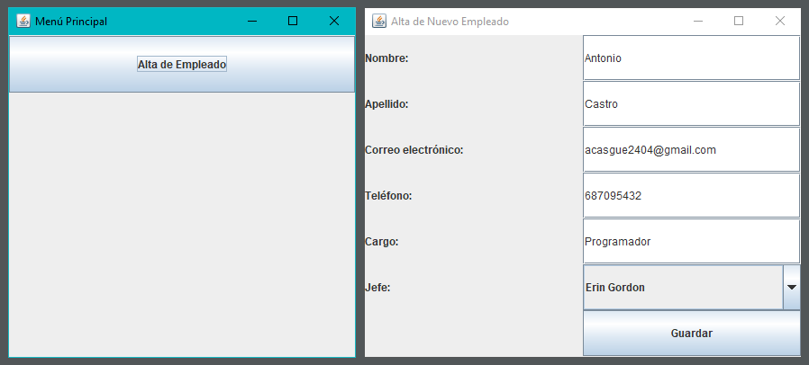
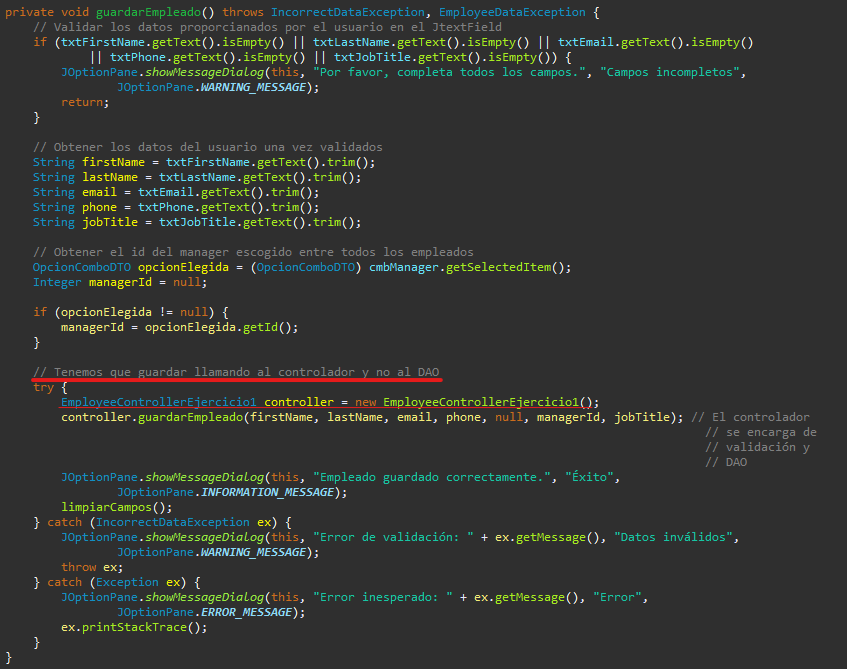

Crear una pantalla con interfaz gráfica que permita registrar nuevos empleados en la base de datos Oracle mediante un formulario de entrada de datos.
El usuario abre la aplicación, pulsa un botón para dar de alta un empleado, escribe los datos del nuevo trabajador (nombre, apellido, etc.), y pulsa “Guardar”. Entonces, la app guarda esa información en la base de datos Oracle de forma segura.
VentanaPrincipal
Es el punto de entrada del programa. Desde su método
main(), se muestra una ventana con botones que activan cada
funcionalidad. En este caso, el botón "Alta de Empleado" activa el
ejercicio 1.
EmployeeControllerEjercicio1.cargaVistaAltaEmpleado().cargaVistaAltaEmpleado()DataBaseConector.getConnection().
EmployeeDAOImpl para recuperar todos los
empleados.
OpcionComboDTO con ID y
nombre completo.
AltaEmpleadoVista pasándole esa lista para llenar
el JComboBox de jefes.
La clase AltaEmpleadoVista crea un formulario en Java Swing
con los siguientes campos:
JComboBox)Además, tiene un botón Guardar que ejecuta una validación y llama al controlador para insertar el nuevo empleado.
JOptionPane de advertencia.
Employee y lo pasa
al método guardarEmpleado() del controlador.
INSERT en Oracle.
La clase EmployeeDAOImpl se conecta a la base de datos y
ejecuta la siguiente consulta:
INSERT INTO employees (first_name, last_name, email, phone, hire_date,
manager_id, job_title) VALUES (?, ?, ?, ?, ?, ?, ?);
El método create() se encarga de convertir los datos de
Employee a los tipos adecuados para Oracle y ejecutar la
operación.
IncorrectDataException si algún campo obligatorio
está vacío.
JOptionPane para mostrar errores de validación o
éxito en el guardado.
Este ejercicio está estructurado siguiendo el patrón MVC (Modelo - Vista - Controlador), con una separación clara:
EmployeeAltaEmpleadoVista (Swing)
EmployeeControllerEjercicio1
EmployeeDAOImplOpcionComboDTO para llenar combos
En este ejercicio he creado todo el proceso para poder dar de alta un nuevo empleado en la base de datos usando una interfaz gráfica hecha con Java Swing.
He seguido el patrón Modelo-Vista-Controlador para tener el código bien organizado y separar la lógica, la vista y los datos. Para rellenar el combo con los jefes disponibles, utilicé un DTO que me permite pasar solo lo necesario a la vista sin acoplarla a la base de datos.
Al principio, sinceramente, no entendía del todo cómo funcionaba el patrón MVC. Me saltaba capas sin darme cuenta, y mezclaba un poco todo porque no lo tenía claro. Fue gracias a la ayuda de Quique, que me lo explicó muy bien y de forma sencilla, cuando por fin entendí cómo debía estructurar el proyecto. Desde ese momento he intentado que todo lo que hago siga esa idea de separación en capas lo mejor posible.
También tuve algunos problemas técnicos, como el manejo de fechas. Me
costó un poco entender que tenía que convertir el Date de
Java a java.sql.Date para poder guardarlo correctamente en
Oracle. Además, tuve que tener cuidado con los campos que pueden ser
nulos, como el ID del manager, y usé setObject con
Types.INTEGER para eso.
Añadí validaciones para asegurarme de que no se pudiera guardar un
empleado si faltaban datos importantes, y usé
JOptionPane para mostrar mensajes al usuario según fuera
necesario.
En general, este ejercicio me ha ayudado mucho a entender cómo se estructura una aplicación real, a aplicar el patrón MVC de forma más consciente, y a trabajar con base de datos desde Java de manera más profesional.